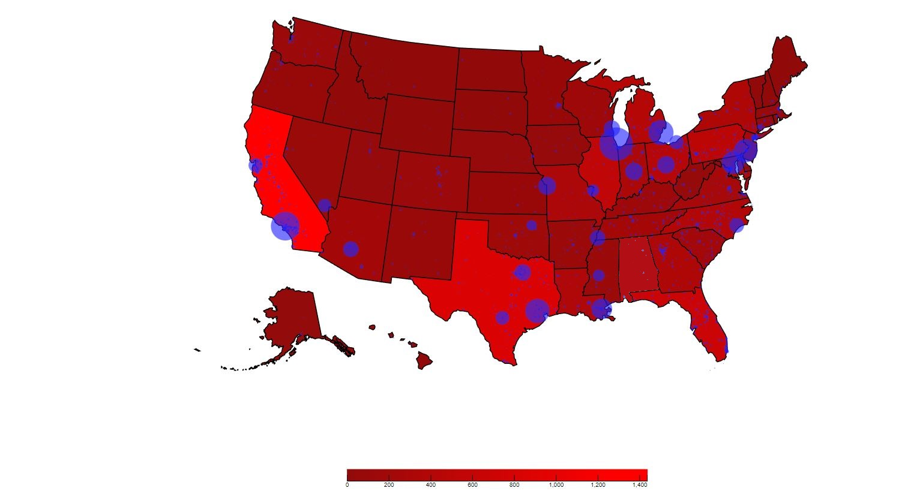

Gun Deaths in USA: White Hat Version
For the overall gun related deaths in the US, I implemented a choropleth map that shows the number of deaths in each state. The number of deaths in each city is displayed in the form of bubbles(circles), where the larger the size of the bubble, the more the number of deaths and vice-versa. This makes it easy to identify cities where a large number of murders have taken place. This integration of map types allows users to more efficiently grasp data both at the state and city level. Hovering above a city or state gives further information regarding number of deaths per gender and per age group in the form of a bar graph. Additionally, users also have the option of interacting with the visualization through filtering the data by both age group and gender. This granular level of control gives users more insights into the data, allowing for more accurate inferences. The color scheme used for the choropleth was taken from colorbrewer, and is color blind friendly. The color scheme used is sequential in nature. The lighter the color, the less the number of deaths and vice-versa. The labels and titles are appropriately marked for easy understanding of values and ranges.
Gun Deaths in USA: Black Hat Version 1

Non - contrasting color range : when compared with the scale of the white hat implementation this black hat implementation has very low color contrast and the starting color also appears threataning. The min range of deaths has been increased, there by increasing the intentisty of the colors on the chloropleth, making it appear that more deaths have occurred in each of the states. This is a subtle change that is not obvious glance as there is no context or documentation available to cross check these values. Also, it becomes more difficult to distinguish between the various shades of red and determine what the contrast in colors.
Gun Deaths in USA: Black Hat Version 2
"Gun violence only in cities" : by filtering out most of the gun violence readings in the rural areas and making the radius more sensitive in the cities(bubbles now look bigger) we can potray a message that gun violence only happens in the cities